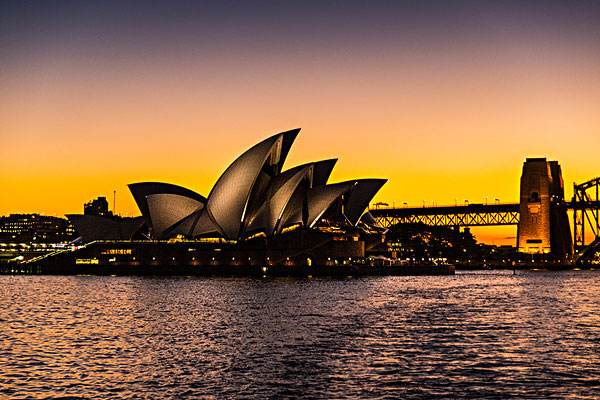
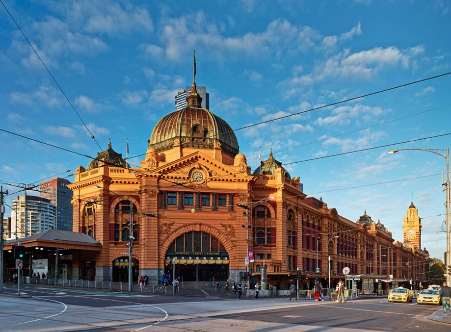
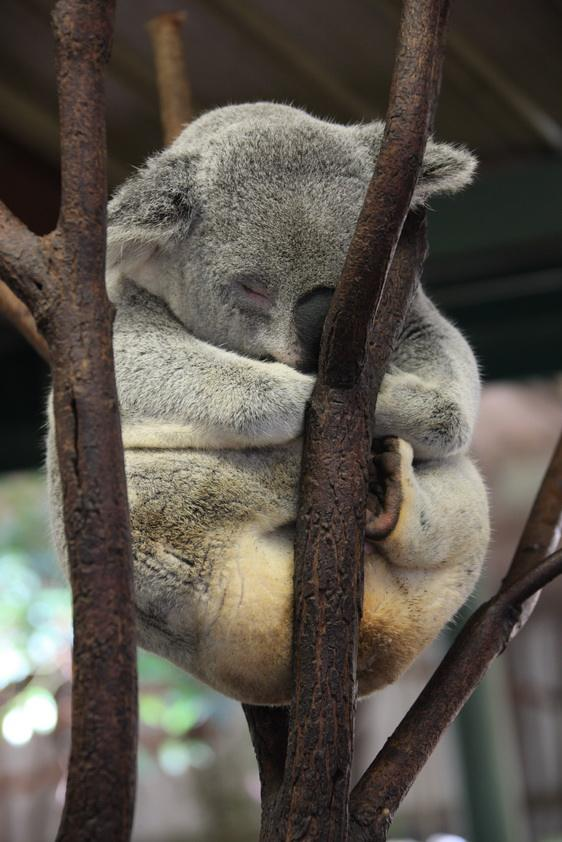

悉尼歌剧院（Sydney Opera House），位于悉尼市区北部，是悉尼市地标建筑物，由丹麦建筑师约恩·乌松（Jorn Utzon）设计，一座贝壳形屋顶下方是结合剧院和厅室的水上综合建筑。歌剧院内部建筑结构则是仿效玛雅文化和阿兹特克神庙。该建筑1959年3月开始动工，于1973年10月20日正式竣工交付使用，共耗时14年[1] 。 悉尼歌剧院曾经获得伊丽莎白女王二世、美国总统福特、克林顿、南非总统曼德拉、联合国前安理会总理安南等众多国际名人造访。悉尼歌剧院位于澳大利亚悉尼，是20世纪最具特色的建筑之一，也是世界著名的表演艺术中心、悉尼市的标志性建筑。该剧院设计者为丹麦设计师约恩·乌松，建设工作从1959开始，1973年大剧院正式落成。在2007年6月28日这栋建筑被联合国教科文组织评为世界文化遗产。 悉尼歌剧院坐落在悉尼港的便利朗角（Bennelong Point），其特有的帆造型，加上作为背景的悉尼港湾大桥，与周围景物相映成趣。每天都有数以千计的游客前来观赏这座建筑。
圣玛丽大教堂(St Mary's Cathedral)是悉尼大主教的所在地，是澳大利亚规模最大、最古老的宗教建筑。它位于学院街与阿尔 伯特王子路的街角处（海德公园对面）。大教堂是由当地的砂岩建成，“哥特式”的建筑风格是欧洲中世纪大教堂的建筑遗风。 始建于1821年，圣玛丽大教堂又被称为澳大利亚天主教堂之母(Mother Church of Australian Catholicism)。圣玛丽教堂气势雄伟恢宏， 内部庄严肃穆。教堂地下墓穴的马洛哥神父地板图案，是以创世纪为主题的，由彩色的碎石镶嵌而成，因手工十分精巧而闻名世界。 它不仅宝贵遗产，也是整个城市和国家精神和文化生活的重要组成部分。大教堂是由当地的砂岩建成，“哥特式”的建筑风格是欧洲 中世纪大教堂的建筑遗风。它始建于1821年，而天主教神父正式来到澳大利亚是在1820年，因此圣玛丽大教堂又被称为澳大利亚天主 教堂之母(Mother Church of Australian Catholicism)。1865年修建中的大教堂毁于大火。重建工程于1865年开始，耗时60多年 ，于1928年完成。1998年至2000年，加修教堂的尖塔。大教堂长107米，中殿24.3米宽，天花板高22.5米，中心塔高46.3米，前塔和尖 塔的高度为74.6米。圣玛丽教堂气势雄伟恢宏，内部庄严肃穆。教堂地下墓穴的马洛哥神父地板图案，是以创世纪为主题的，由彩色的 碎石镶嵌而成，因手工十分精巧而闻名世界。它不仅是过去的宝贵遗产，也是今天整个城市和国家精神和文化生活的重要组成部分。
树袋熊，又称考拉，是澳大利亚的国宝，也是澳大利亚奇特的珍贵原始树栖动物。英文名Koala bear来源于古代土著文字，意思是“no drink”。 因为树袋熊从他们取食的桉树叶中获得所需的90%的水分，只在生病和干旱的时候喝水，当地人称它“克瓦勒”，意思也是“不喝水”。 树袋熊并不是熊科动物，而且它们相差甚远。熊科属于食肉目，而树袋熊却属于有袋目。它每天18个小时处于睡眠状态，性情温顺，体态憨厚。 考拉大体归属为夜行性动物，在夜间及晨昏时活动旺盛，因为这比在白天气温较高时活动更能节省水分与能量消耗。白天通常将身子蜷作一团 栖息在桉树上，晚间才外出活动，沿着树枝爬上爬下，寻找桉叶充饥。一生的大部分时间生活在桉树上，但偶尔也会因为更换栖息树木或吞食 帮助消化的砾石下到地面。以桉树叶和嫩枝为食，桉树叶是他们唯一的食物。他们几乎从不下地饮水，因为从桉树叶中能得到足够的水分。它 们的肝脏十分奇特，能分离桉树叶中的有毒物质，因此考拉的睡眠时间很长以消化有毒物质，每日需睡眠17～20小时，仅剩余4个小时用来采食、 活动、个人卫生清洁及与其它考拉进行交流。
